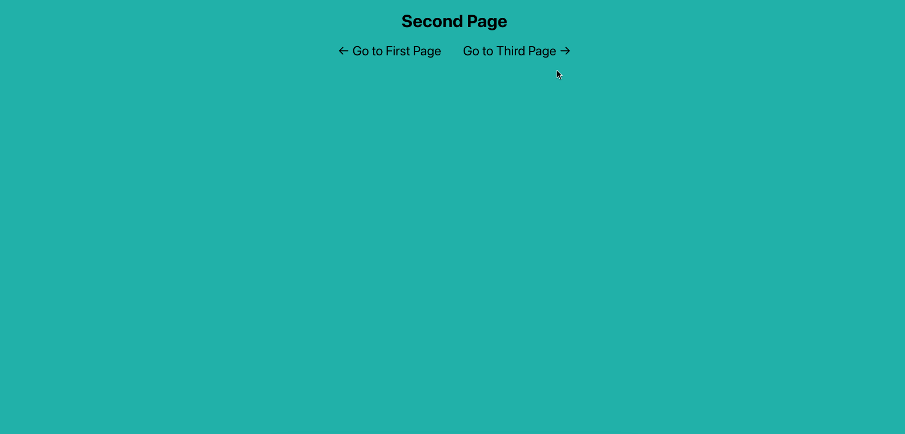

Sliding page transitions

We’re going to look at how to implement sliding page transitions in a React app. The application will have three pages which the user can navigate between using arrows. These page changes will be animated - appearing to slide in and out of view. You can find the source code here.
To help us achieve our goals, we’ll be using the react-transition-group library for this project.
Let’s start by creating a new React project with create-react-app:
npx create-react-app sliding-page-transitions
There will be 3 main stages in the process:
Creating our three page components Setting up our App component (dependencies, state, routes, JSX structure) CSS (general styling and animations)
Creating the three page components
Create a components folder in the src folder.
Add three functional components to this folder called Home, Second, Third.
We’ll need to know the current page the user is looking at in order to be able to do the transitions properly. The way we can do this is by having a currentPage variable in state in our main App component. Every time one of our three pages mounts, we can update this variable. As we’re using functional components for our three pages, we’ll use an effect hook with an empty array passed in as a second argument. so it will only be called once, when the component mounts.
So import useEffect from React and add it to the component with a function inside called setCurrentPage and pass in the page’s pathname as an argument (e.g. / if it’s the Home page, /second if it’s the second page - don’t forget the slash). We’ll create and pass down this setCurrentPage function to the component via props later.
Each component will return a container div. This div will have two classNames - the first will be the same as the name of the component while the second will be a dynamic className - a direction variable we’ll pass down through props. You can add both with simple string concatentation surrounded with curly brackets - don’t forget to leave a space after the first one (see below).
Inside this container div we’ll put a h1 with the name of the page followed by two arrows for navigation (these can be inside span tags). When the user clicks on one of the arrows, it will trigger a function called setNextPage which sends the page’s pathname (including the slash) to App where a nextPage variable in state wlil be set (we’ll create this variable and function later and pass them down as props).
Finally, make sure that you export each component. This is what the Home component should look like:
import React, { useEffect } from 'react';
const Home = props => {
useEffect(() => {
props._setCurrentPage_('/');
}, []);
return (
<div className={'home ' + props.direction}>
<h1>Home Page</h1>
<span onClick={() => props.setNextPage('/third')}>← Go to Third Page<span>
<span onClick={() => props.setNextPage('/second')}>Go to Second Page →</span>
</div>
);
};
export default Home;
Setting up the App component
Now we have our three page components set up, let’s move to the parent App component. First, you can delete all the boilerplate JSX inside the return statement as well as the logo import at the top of the page. Then, install the two dependencies that we need for this project. They are react-router-dom (to allow page navigation) and react-transition-group (to help us add animated transitions).
npm i react-router-dom react-transition-group
When this is done, import the following components from these packages at the top of your App file:
import { Router, Route, Switch } from "react-router-dom";
import { TransitionGroup, CSSTransition } from "react-transition-group";
React-transition-group has four components in total but we only need these two.
Next, import the three page components that we created:
import Home from "./components/Home";
import Second from "./components/Second";
import Third from "./components/Third";
Add a basic functional component if you don’t already have one.
We’ll be using two React Hooks - useState and useEffect so import these:
import React, { useState, useEffect } from "react";
We’ll use the state hook to hold the variables currentPage, nextPage as well as a direction variable for each page (with null provided as an inital value). Add the following inside the component:
const [nextPage, setNextPage] = useState(null);
const [currentPage, _setCurrentPage_] = useState(null);
const [homeDirection, setHomeDirection] = useState(null);
const [secondDirection, setSecondDirection] = useState(null);
const [thirdDirection, setThirdDirection] = useState(null);
Whenever the nextPage variable is updated (when a user clicks on an arrow), we want to call a function that sets the direction variables so that the pages slide in the correct direction. We’ll use the effect hook like we did in the page components. However, this time, instead of leaving the array empty, we’ll insert the nextPage variable into the array so the function is called whenever this changes:
useEffect(() => {
updatePageDirections(nextPage);
}, [nextPage]);
When the App component first mounts, all of the variables in state will change because they’ll be updated with the initial values we pass in (null in this case). This means that useEffect will be triggered when you start the app. We don’t really want that to happen so let’s add a condition inside the useEffect to check whether the nextPage variable has actually been set:
useEffect(() => {
if (nextPage === null) {
return;
}
updatePageDirections(nextPage);
}, [nextPage]);
Now let’s create this updatePageDirections function that we just called. In this function, we need to do three things:
-
declare variables for each direction (these can have the same names as the direction variables in state)
-
assign a direction (right, left or null) to each variable depending on what pages the user is moving from/to
-
save the variables to state
Our function (which should be inside App) should look something like this:
const updatePageDirections = () => {
let homeDirection, secondDirection, thirdDirection;
if (currentPage === "/" && nextPage === "/second") {
homeDirection = "left";
secondDirection = "right";
thirdDirection = null;
} else if (currentPage === "/second" && nextPage === "/third") {
homeDirection = null;
secondDirection = "left";
thirdDirection = "right";
} else if (currentPage === "/third" && nextPage === "/") {
homeDirection = "right";
secondDirection = null;
thirdDirection = "left";
} else if (currentPage === "/third" && nextPage === "/second") {
homeDirection = null;
secondDirection = "left";
thirdDirection = "right";
} else if (currentPage === "/second" && nextPage === "/") {
homeDirection = "left";
secondDirection = "right";
thirdDirection = null;
} else if (currentPage === "/" && nextPage === "/third") {
homeDirection = "right";
secondDirection = null;
thirdDirection = "left";
}
setHomeDirection(homeDirection);
setSecondDirection(secondDirection);
setThirdDirection(thirdDirection);
};
Note that when we assign a direction to a page, for example ‘left’, this means that this page will either be entering from the left or exiting to the left (an additional ‘enter’ or ‘exit’ className will be added automatically by CSSTransition during transition). We’re assigning null as the direction for whichever page is not going to be visible during the transition (though this isn’t essential).
Once the page directions have been updated in state, we’ll want the page to change. We can make this happen by using the history object. The simplest way to access this object is to import the createBrowserHistory function from the history library. This is a built-in library in React so you don’t need to install it. Then create a variable called history and assign it the result of instantiating this class. This will be a new history object that we can manipulate. Add these lines to the top of the file:
import { createBrowserHistory } from "history";
const history = createBrowserHistory();
Now, to change the page, all we need to do it use the history object’s push method to tell it the pathname we want to navigate to. For example, to nagivate to the second page, you would use:
history.push("/second");
As mentioned before, we want to change the page as soon as the page directions have been updated in state. You might think that we could use the useEffect hook with the direction variables included in the array to trigger a function once these have changed. There’s a problem with this though. The useEffect hook is only called if the value of the variable(s) that you pass into the array changes. So if the new value is the same as the old one, then nothing happens.
Imagine we navigate from the second page to the third page. The direction of the second page would be set to left beacuse it’s exiting to the left and the direction of the third page would be set to right because it’s entering from the right. Now, imagine we then want to go back to the second page. The third page would now be exiting to the right instead of entering, but its direction would still be set to right and second page’s direction would still be left. That means, even though we’re changing directions, the actual direction variables in state won’t change and won’t trigger our useEffect function. The result would be that you could only navigate in one direction. Obviously that’s no good so we need another way to trigger the useEffect hook.
The (slightly hacky) solution I’ve used is to create a new variable in state called transitionCount which can have an initial value of 0:
const [transitionCount, setTransitionCount] = useState(0);
We can then update its value (incrementing by one) directly after we update the values of the directions (at the bottom of the updatePageDirections function):
setHomeDirection(homeDirection);
setSecondDirection(secondDirection);
setThirdDirection(thirdDirection);
setTransitionCount(transitionCount + 1);
As this value only changes after the directions are set, and as its new value will never be the same as the previous one, we can use this variable to indicate that the page should change. So go ahead and add this to our component:
useEffect(() => {
if (nextPage === null) {
return;
}
history.push(nextPage);
}, [transitionCount]);
Now lets add some JSX to our App component. First of all, delete anything already inside the return statement and insert a pair of Router tags (not BrowserRouter) which will surround everything. Router requires a history prop so insert this with the value set to history.
In a couple of the following components, we’re going to need access to React Router’s location object. This object is made available via props to all Route components. So let’s wrap everything in a single self-closing Route tag to get access to it later on. Because we need to pass down the props, we’ll use the render prop of Route. This render prop takes an anonymous function (wrapped in curly brackets) with a props parameter. This anonymous function will return all of the other components.
At this point, the return statement of App should look like this:
return (
<Router history={history}>
<Route
render={(props) => {
return (
//our other components will go here
);
}}
/>
</Router>
);
This anonymous function should first return a container div. You can give it a className of page-container. You can think of this as the static frame inside which other things move in and out.
Inside this add a pair of TransitionGroup tags. TransitionGroup is required when you’re dealing with multiple components.
Inside these, add a pair of CSSTransition tags. CSSTransition adds special class names to components indicating whether they’re entering or exiting the DOM. As this is a child component of TransitionGroup, it requires a unique key prop. We can use props.location.key as the value (provided by the Route tag that we wrapped everything in).
You’ll also want to give it a timeout prop. This is the duration you want your transition animation to last. Let’s give it a value of 500 (milliseconds) for now. You can change it later if you like.
There’s another optional prop you can give to CSSTransition called classNames (plural). Whatever string you give this prop as a value will be prepended to the className automatically applied by CSSTransition. So, for example, if you added classNames=“page”, the component would have the class page-enter when entering the DOM and page-exit when leaving the DOM. This is useful if you’re applying different animations to different components. However, in our case, we’re applying the same slide animation to all our components so we don’t need to add anything.
Now inside the CSSTransition tags, add a pair of Switch tags with a prop called location with a value of props.location (if you don’t include this, the Switch component won’t be aware of page changes and our animations won’t work).
The return statement of App should should now look like this:
return (
<Router history={history}>
<Route
render={(props) => {
return (
<div className="page-container">
<TransitionGroup>
<CSSTransition key={props.location.key} timeout={500}>
<Switch location={props.location}>
//we'll add our routes here
</Switch>
</CSSTransition>
</TransitionGroup>
</div>
);
}}
/>
</Router>
);
Now, inside the Switch tags we’re going to add a Route for each of our three pages. We’ll use a single self-closing tag for each. It will require two props. The first is path, the value of which will be the pathname of the page (e.g. / for the home page, /second for the second page). The second will be render. The anonymous function we pass as a value to this will return the component that we want to render. Each component needs 3 props - direction, setCurrentPage and setNextPage. The last two will be the same for all three but the direction prop will be different.
This is what the first one should look like:
<Route
exact
path="/"
render={(props) => {
return (
<Home
direction={homeDirection}
_setCurrentPage_={setCurrentPage}
setNextPage={setNextPage}
/>
);
}}
/>
Note that, for the Home component, you also need to add the exact keyword before path. This is only required when the pathname of a component is /.
We’re now finished with our App component and at this point you should be able to navigate between the three pages with the arrows, although there won’t be any animation. If you open the elements tab in developer tools you’ll be able to see the enter/enter-active/enter-done and exit/exit-active/exit-done classes being applied to the page components by CSSTransition as you change page. We’ll use these classes when we add the animations in the next stage.
CSS
Go to the app.css file and delete all the default styling (you can leave the default styling in index.css if you want). Now, if you remember, there’s a container div that wraps around the TransitionGroup and CSSTransition components and everything they contain. We gave it a className of page-container. This div needs to be positioned relatively because the elements inside it will be positioned absolutely. We’ll also give it full width and height:
.page-container {
position: relative;
width: 100vw;
height: 100vh;
}
Next, give the container divs of the actual pages that are moving (i.e. Home, Second and Third) a position of absolute. This is to allow them to move freely. They also need a height and width of 100%. You can also add text-align: center if you want the title and arrows in the center of the page.
.home,
.second,
.third {
position: absolute;
height: 100%;
width: 100%;
text-align: center;
}
Now you can add some colour to the background of each page to be able to see the animation better. Choose any colours you want. These are the colours I’ve chosen:
.home {
background: lightcoral;
}
.second {
background: lightseagreen;
}
.third {
background: lightslategray;
}
Let’s also make the navigation buttons look a bit better:
span {
cursor: pointer;
font-size: 1.5rem;
margin: 0 20px;
}
span:hover {
color: white;
}
Now let’s create the animations. We’ll need four altogether - I’m going to call them enterLeft, exitLeft, enterRight, exitRight. Let’s do the enterLeft one first. We’ll use the transform: translate property to move the page horizontally. In this case we want it to be off-screen to the left at the start and then move into view. So its starting value should be -100% and it should be 0% at the end of the animation. So our full animation will look like this:
@keyframes enterLeft {
from {
transform: translate(-100%);
}
to {
transform: translate(0%);
}
}
Do the same for the other three animations. These are the values you’ll use:
- exitLeft: from 0% to -100%
- enterRight: from 100% to 0%
- exitRight from 0% to 100%
The final step is to apply these animations to our pages. As we’ve seen, CSSTransition automatically applies different classes to the components that are transitioning. So if a component is entering the screen, it will have the class enter. If it’s exiting the screen, it will have the class exit. It also adds an additional class depending on whether the transition is active or done but we won’t use them in this project. So all we need to do is apply our animations to these classes like so:
.left.enter {
animation: enterLeft 0.5s;
}
.left.exit {
animation: exitLeft 0.5s;
}
.right.enter {
animation: enterRight 0.5s;
}
.right.exit {
animation: exitRight 0.5s;
}
There are two important things to remeber here. The first is that, since we’re targeting elements which have both classes, there shouldn’t be any space between the two class names. The second is that the animation-duration must be the same as the duration you provided to the timeout property in the CSSTransition component in App. If these are different the animation won’t work properly.
And that’s it! Your pages should be transitioning smoothly now. Try customising these animations by adjusting the duration or the timing-function.